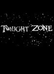
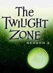
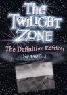

The Twilight Zone
Stephen Klancher
...has seen 1
...has seen 0 hours
...has not seen 2.6 hours

Timeline
Most Recent:
Time Enough at Last
...has seen 1
...has seen 0 hours
...has not seen 2.6 hours
Timeline
Most Recent:
Time Enough at Last




